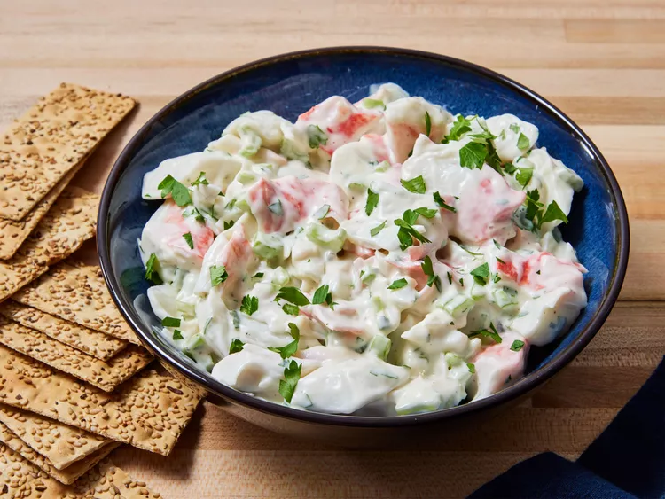
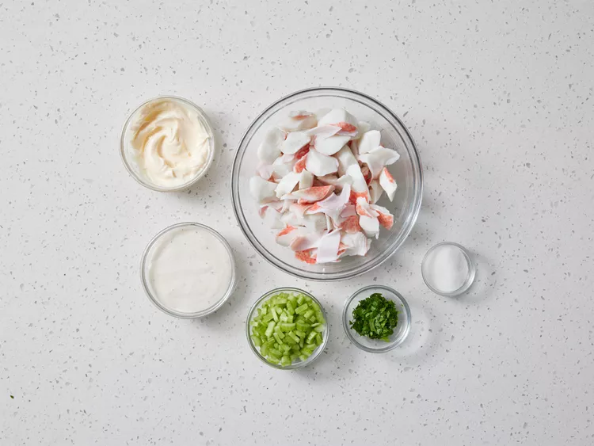
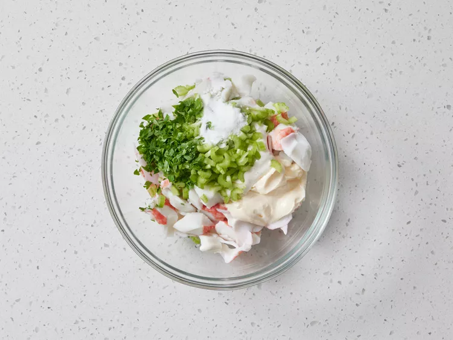
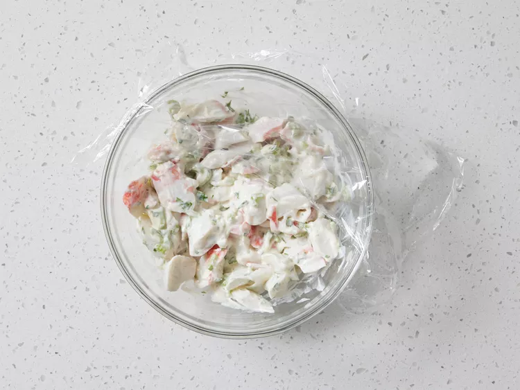

Home
Crab Salad

Description
This crab salad recipe, featuring budget-friendly ingredients, is as easy as it gets.
Making crab salad at home couldn't be easier. You'll find a detailed ingredient list and step-by-step instructions in the recipe below.
Ingredients
- 1 pound imitation crabmeat, flaked
- ½ cup finely chopped celery, or more to taste
- ½ cup reduced-fat ranch dressing
- ⅓ cup mayonnaise
- 1 tablespoon white sugar, or to taste
- 1 teaspoon minced fresh parsley
Steps
- Gather all ingredients.

- Gently mix crabmeat, celery, ranch, mayonnaise, sugar, and parsley in a salad bowl until thoroughly combined.

- Refrigerate, stirring occasionally, for 8 hours to overnight.

- Stir again just before serving. Enjoy!